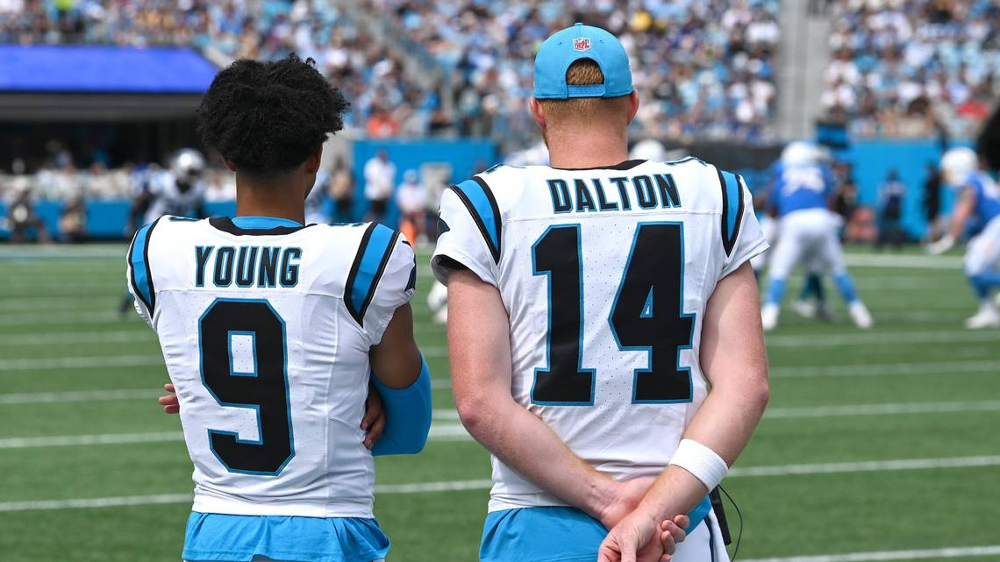
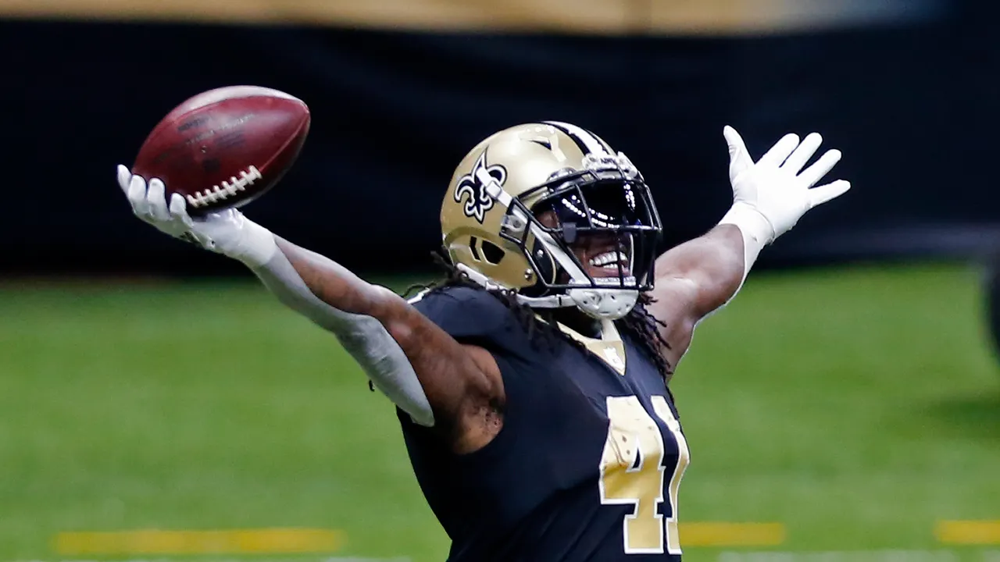
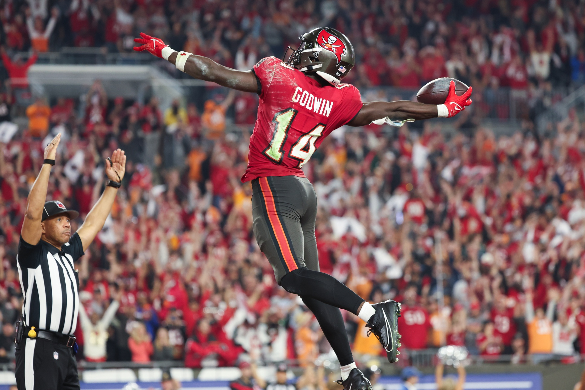
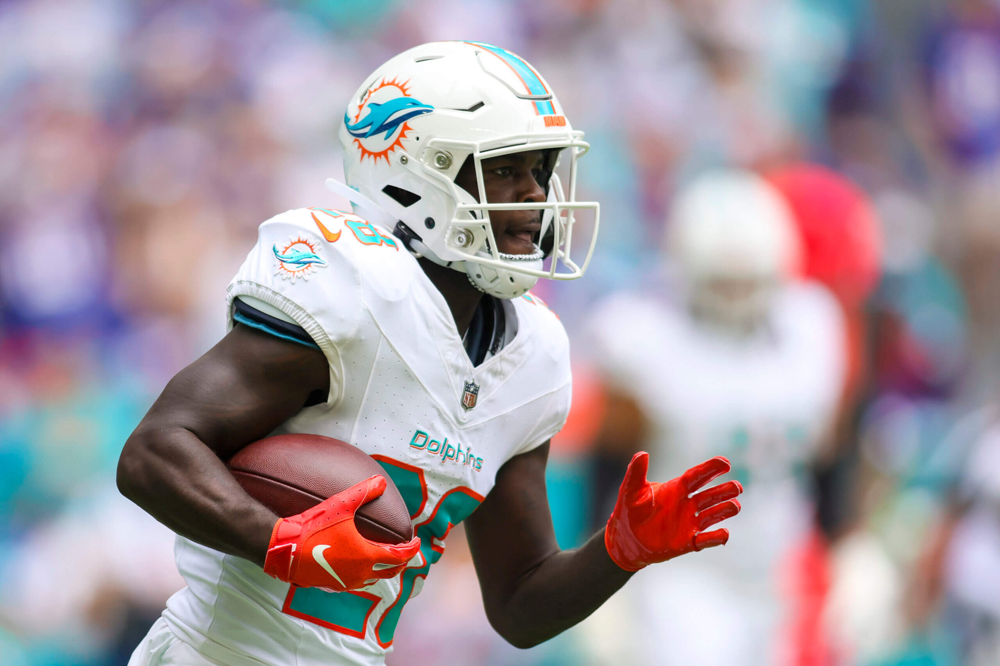
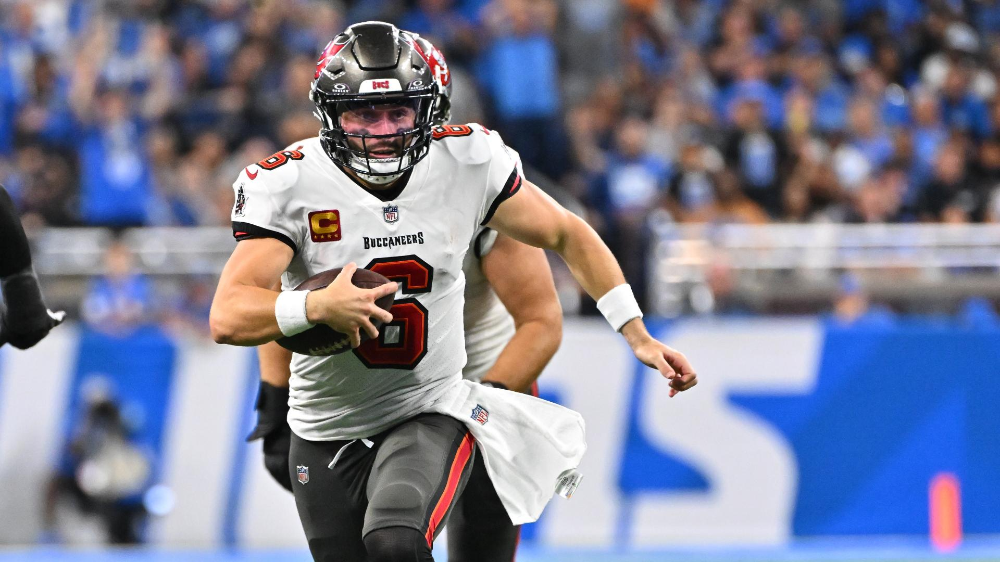
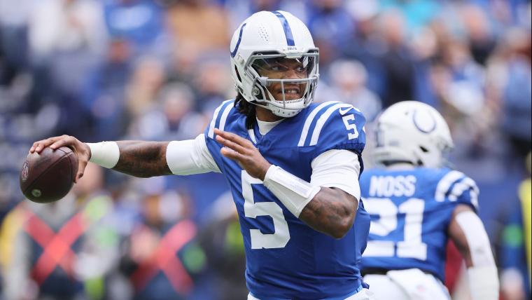
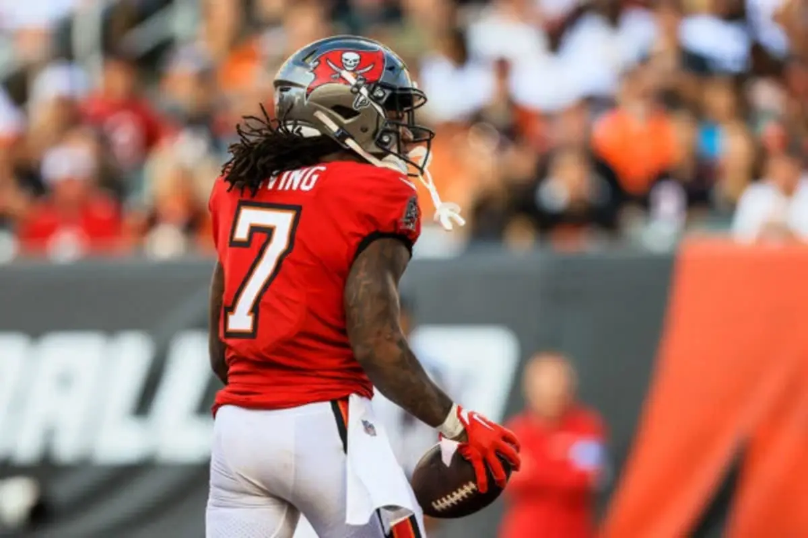
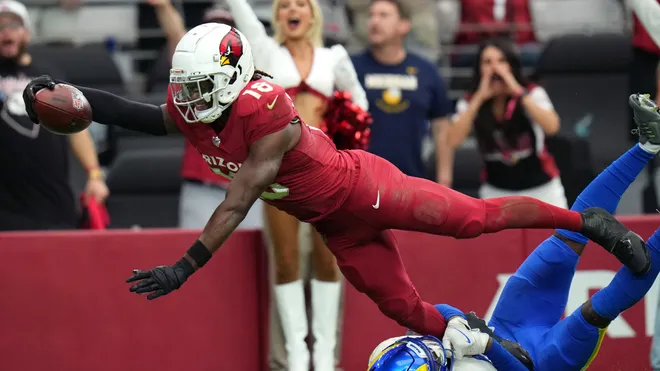
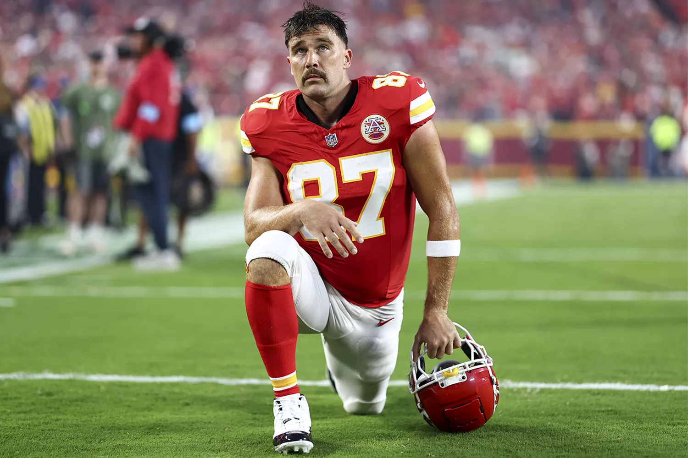
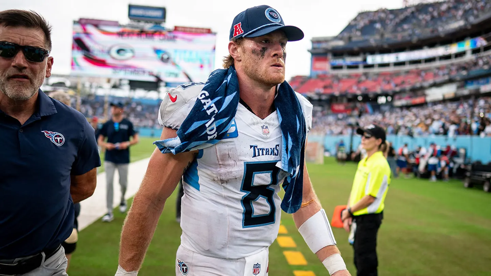

A week of injuries, upsets, and setbacks. This season is gonna be wild.
Matchup of the Week: Wont You Be My Nabers (2-0) v. Achane the Cocaine Train (1-1) Seif’s team seems like it is for real and if CJ can avoid getting outscored by everyone and the kicker, he could hand Seif his first L of the season.
Waiver Wire Wizard: New record of 18 claims in a single day. You love to see the action.
The wizard and LOSER for the week goes to Pangy who spent $8 on Shakir this week but dropped Lazard when he picked him up for $13 the week before. Also, Shakir has caught 8 passes on 8 targets… enough said
LATE EDIT: PJ spending $56 on Nick Chubb
Let’s get into it boysssss!

1. Seif (2-0, PF: 313.58) ↔️
Seif’s team goes off this week. His biggest issue is deciding who to start each week. Hopefully his team keeps it up. Can you really trust Daniel Jones throwing to Nabers though?

2. Neil (2-0, PF: 257.24 ) ⬆️
Solid depth and performance from this team so far. The injury bug only hits one of his top receivers. Chris Godwin is somehow a WR1 right now. Will his keeper hold his value? Tough start for Kincaid.

3. CJ (1-1, PF: 245.32) ⬆️
ACHANE ACHANE ACHANE THE COCAINE TRAIN. Big questions now that Skylar Thompson is handling the snaps. Maybe they feed the train? Starting core is solid but the bench starts to get a little shaky.

4. Pangy (1-1, PF: 218.06 ) ⬆️⬆️⬆️⬆️⬆️⬆️
Saquon Barkley is playing behind the best offensive line he has ever had and it shows. The giants are stupid. Pangy’s depth and FAAB situation is questionable at best. Hopefully he doesn’t need to dig into his bench.

5. PJ (1-1, PF: 235.02) ⬆️⬆️⬆️
Baker Mayfield QB1 is super sustainable, right? Breece Hall has been good and his receiving core is top tier. If Baker keeps it up, this team could be a real threat week in and week out.

6. Jake (1-1, PF: 252.54) ⬇️⬇️⬇️⬇️
Interesting strategy with the lions running backs being RB1 and RB2 and it’s working. Holy injuries though. Losing Deebo and Kupp hurts and Jake has to dig deep into the bench to salvage some points with some tough match ups ahead.

7. Joel (1-1, PF: 221.08) ⬇️⬇️
James fucking Cook, what a showing last Thursday night. Can Bucky Irving provide a little light with Pacheco out? GO DUCKS!

8. Andy (1-1, PF: 243.5) ⬇️⬇️
Lamar Jackson hasn’t been Lamar Jackson but that doesn’t mean he won’t be. Also, Andy needs to figure out who he is starting each week. So far he has been hit or miss. Also, CMC? Yikes.
9. Tony (0-2, PF: 193.74) ⬇️⬇️
Hurts and Bijan are doing good for Tony but everyone else is performing well below what you would expect them to. Hurts should’ve gotten one more passing touchdown on Monday. Also, JUSTIN TUCKER HA-HA-HA-HA

10. Kris (0-2, PF: 183) ⬇️
Kris has brought the Madden curse to Quarterbacks. Currently, his bright spot is Tyreek Hill and who knows what is going to happen with a dude named Skylar slinging the ball. Hope you saved your slutler outfit.
Good luck to everyone besides Andy and Tony - Joel and PJ💋
“He’s grown up, and he knows better, so I was really irritated that he cost us three points in a game that we probably needed it.“
- Brian Callahan
